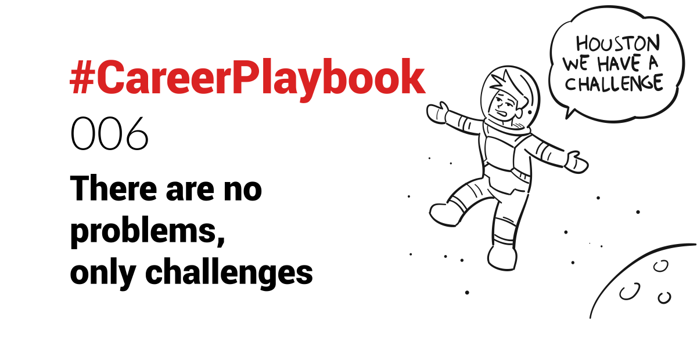

A simple word change leading to a mindset and perception shift.
You might have heard of the saying "There are no problems, only solutions".
When the solution is not obvious (yet) though, this can be a discouraging statement to hear.
The saying I have been using A LOT, and which changed my choice of words is "There are no problems, only challenges.".
I learned this a decade ago from one of my mentors and leader, Ben Sullivan.
Back then, I was using the word "problem" a lot in my interactions.
"We have a problem...."
"The problem is..."
Perhaps that was my French side 🇫🇷🤔😉
In any case, while my mindset was to put the issues forward in a straightforward way, so as to be able to address them, using the word "problem" conveyed a sense of negativity.
This is particularly strong depending on the culture. Perhaps it was a French-American clash of cultures.
Using the word "challenge" instead of "problem" shifts the perception from a negative, to one that conveys the fact that it's just a hurdle, that needs to be overcome.
Personally, I love challenges - they are the ones who make you learn, grow and evolve, pushing you out of your comfort zone.
When you lead a team, tackling a challenge together can be inspiring. Solving a problem is scarier.
In startups, especially in the early years, there are A LOT of challenges, on a daily basis.
So when there are no problems, only challenges, the road ahead is more exciting than depressing.
In my startups now, I even have a Slackbot in our Slack workspace to correct anyone using the word problem 😁🤓
 What similar word change have you experienced improving mindset and perception?
What similar word change have you experienced improving mindset and perception?